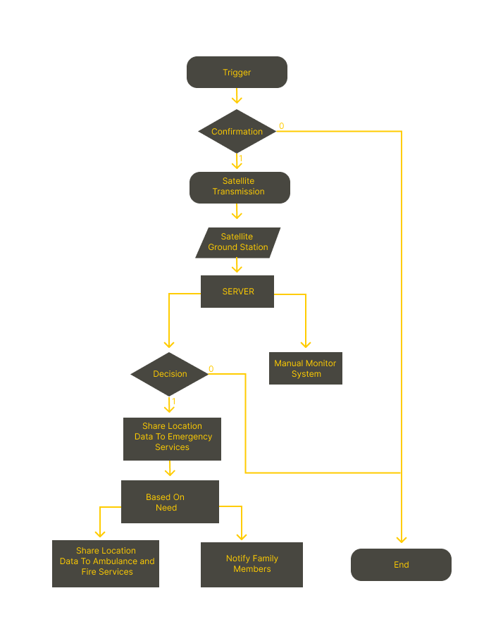

User Manual: Assembling & Wiring Your PCB Circuit
1. Understanding the Components
ESP32-WROOM-32D
- Microcontroller
MCP2515 CAN Module
- CAN Communication
Iridium 9603N
- Satellite Communication
Buttons (Medical, Fire, Police)
- Input Controls
LEDs (Rx, Tx, Power)
- Status Indicators
Power Supply (3.7V Li-ion & 5V Regulator)
2. Schematic Design in KiCad
3. PCB Layout in KiCad
4. Firmware Development for ESP32
5. Final Testing & Debugging
Check LED responses, verify CAN communication, and test the Iridium modem.
